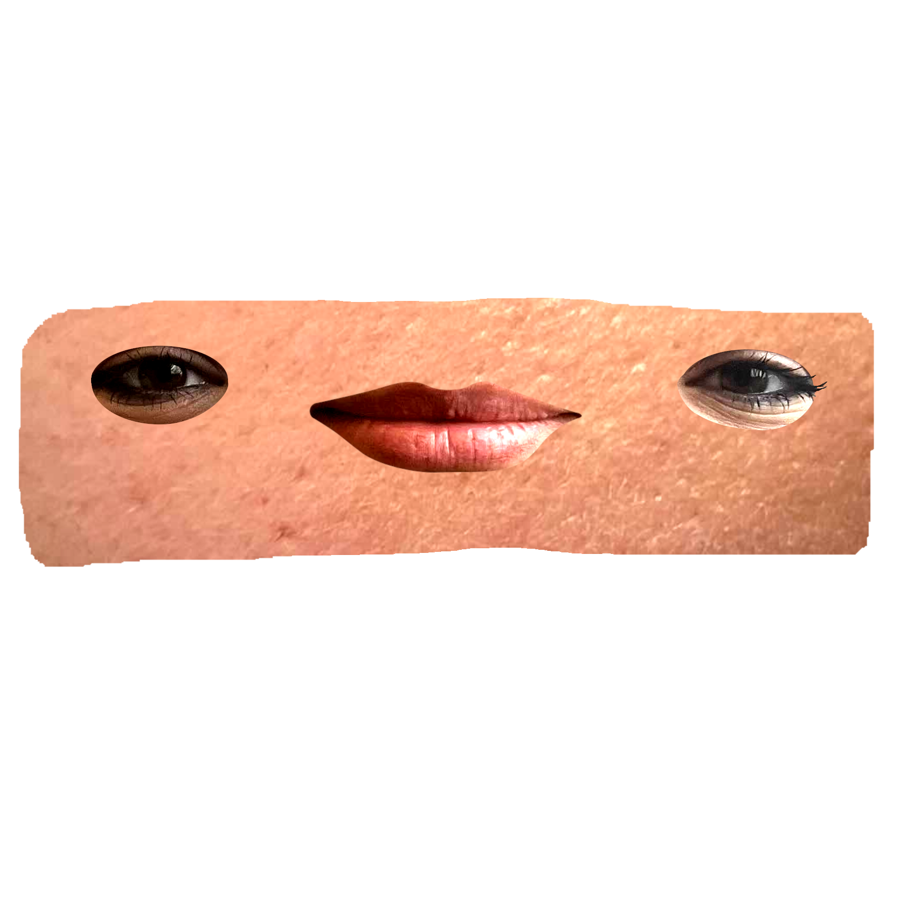

Nasmak PM Media Campaign
The Brief
Nasmak PM is an experimental electronic band that wanted to reach younger audiences and build a stronger social media presence. I worked on a visual media campaign and then developed PMRecorder, a browser-based tool for creating branded animated videos.

Audience & Direction
The existing audience was largely Dutch and aged 40–60, so the campaign needed to preserve Nasmak PM's experimental character while creating content that could work on Instagram, TikTok and YouTube.
I developed a visual direction around the band's plus and minus mascots, using energetic compositions, bold type and movement to translate the music into social content.


PMRecorder
To make the campaign easier to maintain, I built an interactive web application that lets the band create custom animated videos with their mascots. The development progressed from basic movement to sprite animation, character controls and recording functionality.
This was my first larger JavaScript project. It required me to learn through iteration, organise the interaction logic and use Git while collaborating with a teammate.
Try PMRecorderOutcome
The campaign established a recognisable visual language for Nasmak PM, while PMRecorder gave the band a repeatable way to create social media content without rebuilding each animation from scratch.
Key skills: visual identity, Photoshop, HTML/CSS, JavaScript, interaction design and Git collaboration.